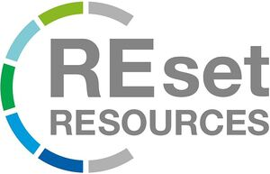

Trade Mark Journal No.2025/047 21 November 2025
WO0000001871313 (6,7,9,11,16,17,18,20,21,22,24,25,26,27,28,29,31,32,35,36,37,40,41,42)
Office of origin: European Union Intellectual Property Office (EUIPO)
Date of International Registration:6 December 2024
Date of designation in the UK:
6 December 2024

International priority date claimed: 12 June 2024
(European Union Intellectual Property Office (EUIPO))
(019040196)
- Class 6
- Articles of metal for packing, wrapping and bundling; containers of metal for storage, transport and packaging; cables, wires and chains of metal; nuts, bolts and fasteners of metal; packaging containers of metal for industrial purposes; transport pallets of metal; transport containers of metal; metal containers for the transport and storage of goods; metal foils for packaging purposes.
- Class 7
- Drilling machines and equipment; ironing machines and ironing presses; electric generators; sweeping, cleaning and washing machines.
- Class 9
- Apparatus and instruments for accumulating and storing electricity; display devices, television receivers and cinematographic and video equipment; apparatus, instruments and cables for electricity; apparatus and instruments for regulating electricity; audio, visual and photographic equipment; recorded media; computers and computer hardware; computer networking and data communication apparatus and equipment; databases; data storage devices and media; data processing apparatus and equipment and accessories [electrical and mechanical]; printers; electrical circuits and printed circuit boards; electrical and electronic components; photocopiers; weight measuring instruments and apparatus; information technology, audio-visual, multimedia and photographic equipment; cables and wires; communications equipment; navigation, orientation, location tracking, target tracking and mapping devices; photovoltaic systems for the generation of electricity; point-to-point communication devices; calculators; scanners for data processing; broadcasting apparatus and equipment; sensors, detectors and monitoring instruments and apparatus; signal lines for IT, audio-visual and telecommunications; control and regulating devices; instruments and apparatus for measuring electricity; instruments and apparatus for measuring time [except clocks]; downloadable and recorded computer software for collecting, analyzing and organizing data; downloadable electronic publications in the nature of pamphlets, reports, magazines, newsletters, instructional literature, study guides, reference books and manuals, and handbooks.
- Class 11
- Apparatus for heating and steam generating, not for industrial purposes; fabric steamers; lighting and light reflectors; lighting and light reflectors for vehicles; tanning apparatus; appliances for cooking, heating, cooling and preserving food and beverages; heating elements and filaments; refrigerating and freezing equipment; air treatment equipment; personal heating and drying apparatus; ornamental fountains, sprinkling and irrigation systems.
- Class 16
- Bags, pouches and articles for packaging, wrapping and storage purposes, of paper, cardboard or plastics; paper and cardboard [industrial]; plastic packaging bags; paper packaging containers for industrial purposes; cardboard packaging containers; plastics films for packaging purposes; printed matter in the nature of pamphlets, reports, magazines, newsletters, instructional literature, study guides, reference books and manuals, and handbooks.
- Class 17
- Shock absorbing and packing materials, vibration dampers; adhesive tapes, strips and films; shock-absorbing buffers of rubber.
- Class 18
- Leather packaging containers for industrial purposes; luggage, bags, wallets and other carrying cases; umbrellas and sun umbrellas; saddlery, whips and clothing for animals; walking sticks.
- Class 20
- Containers and closures and holders therefor, not of metal; displays, stands and signage, not of metal; boxes and pallets, not of metal; baskets, not of metal; barrels and drums, not of metal; wooden packaging containers for industrial purposes; plastic packaging boxes; plastic packaging containers; edgings of plastic for furniture; furniture; bathroom furniture; animal housing; beds, mattresses, pillows and cushions; displays, stands and signage, not of metal; interior blinds and roller blinds and fastenings for curtains and interior blinds and roller blinds; ladders and portable stairs, not of metal; picture frames; works of art and ornaments, including sculptures, made predominantly of wood, straw, bone, shell, wax, resin, plastic and plaster or substitutes for these materials; coat hangers, coat stands [furniture] and coat hooks.
- Class 21
- Tableware, cookware and containers; glass packaging containers for commercial purposes.
- Class 22
- Bags and sacks for packaging, storage and transport; padding, cushioning and stuffing materials, except of paper, cardboard, rubber or plastics; ropes, twine, non-metal slings for loading and non-metal bands for wrapping or binding.
- Class 24
- Bath linen; bed linen and blankets; labels made of textile material; filter materials made of textile material; curtains and drapes; household linen; kitchen and table linen; furniture covers; fabrics; textiles and substitutes for textiles; wall hangings.
- Class 25
- Clothing; headgear; parts of clothing, headgear.
- Class 26
- Charms, other than for jewellery, key rings or key chains; hair ornaments, curlers, hair fastening articles and false hair; artificial fruit, flowers and vegetables.
- Class 27
- Vehicle mats and carpets; floor coverings and artificial floor coverings; artificial floor coverings; carpets, rugs and mats; wall and ceiling coverings.
- Class 28
- Sports and physical exercise equipment; flippers for swimming; swimming belts; swimming jackets; toys, games and playthings.
- Class 29
- Jellies, jams, compotes, fruit and vegetable spreads; natural and artificial sausage casings; soups and broths, meat extracts; processed fruits, mushrooms, vegetables, nuts and pulses.
- Class 31
- Animal feed and animal nutrition; plant residues [raw material]; bedding and litter for animals.
- Class 32
- Beers and non-alcoholic beers; juices.
- Class 35
- Advertising, marketing and sales promotion; public relations services; product demonstrations and presentations; trade fair and commercial exhibition services; customer loyalty, incentive and bonus program services; distribution of advertising, marketing and sales promotional materials; consultancy and assistance services in the field of advertising, marketing and sales promotion; market research; gathering and systematizing of business data; business consultancy services; market research and market analysis; development of business concepts; cost-price analyses relating to waste disposal, removal, waste management and waste recycling; consultancy services in the field of procurement of goods and services; provision of information and advice to consumers in commercial and business matters [consumer advice]; business administration assistance, business management assistance, and administrative accounting services; business consultancy and advisory services: relating to office functions; providing commercial information and advice for consumers in the choice of products and services; business data analysis; consumer research; marketing research; collection and systematization of business data into computer databases; providing of information on the internet relating to consumer goods; providing of information on the internet relating to consumer protection topics, namely, providing of information for consumers relating to the selection of goods for purchase; providing information on the internet about customer service, namely, customer business relationships, customer loyalty programmes; administrative data processing services; administrative and business management services of educational and vocational research programs; providing analysis in the fields of business information for businesses; provision of business information and business advice via global computer networks; wholesale store services relating to manure, paints, coatings, washing and cleaning preparations, detergent, cosmetics, perfumery, industrial oil and greases, fuels, motor fuel, illuminants, candles; wholesale store services, online wholesale store services, retail store services, online retail store services, and mail order retail services, including by means of the internet and teleshopping programmes, relating to articles for babies, namely seats adapted for babies, feeding bottles, baby bath tubs, baby blankets; wholesale store services, online wholesale store services, retail store services, online retail store services, and mail order retail services, including by means of the internet and teleshopping programmes, relating to articles of metal, for use in construction and metal hardware, namely screws, tools for machine tools, crow bars, hammers, mallets and sledgehammers, hand tools namely clamps for carpenters or coopers, punch pliers, tube cutters, drilling rods, knives, riveters, files [tools], putty knives, machines, namely drilling machines, grinding machines, saws and apparatus for the working of metal, wood, plastic, concrete, glass and stone, machine tools, building articles, DIY articles, garden tools; wholesale store services, online wholesale store services, retail store services, online retail store services, and mail order retail services, including by means of the internet and teleshopping programmes, relating to gasket making materials, materials for packaging, insulating materials, tubes, films, building materials, transportable buildings and parts thereof, furniture, fixtures, containers, not of metal, articles for animals except whips and clothing for animals, household or kitchen utensils and containers, bathing article, toilet articles, cookware and tableware, cutlery, glassware, earthenware, crockery; wholesale store services, online wholesale store services, retail store services, online retail store services, and mail order retail services, including by means of the internet and teleshopping programmes relating to bags for packaging, packaging sleeves, bags for packaging; wholesale store services, online wholesale store services, retail store services, online retail store services, and mail order retail services, including by means of the internet and teleshopping programmes, relating to textile goods, and substitutes for textiles, of household linen, bed linen, table linen, sleeping bags, bath linen, curtains, blinds, furniture, fixtures; wholesale store services, online wholesale store services, retail store services, online retail store services, and mail order retail services, including by means of the internet and teleshopping programmes, relating to clothing, headgear, haberdashery, hair ornaments, artificial flowers, artificial plants, artificial trees, artificial fruit, mats, floor coverings, wall hangings and coverings; wholesale store services, online wholesale store services, retail store services, online retail store services, and mail order retail services, including by means of the internet and teleshopping programmes, relating to gymnastic and sporting articles except sportswear, playthings, games, video game apparatus, toys, decorations for Christmas trees, foodstuffs for animals, bedding for animals, plants and flowers, seeds, agricultural and forestry products; retail store services, online retail store services, wholesale store services, online wholesale store services, and mail order retail services, including by means of the internet and teleshopping channels, relating to household goods, namely, household containers, household utensils, baking moulds and baking trays, cleaning instruments and articles for cleaning purposes, tableware and table cutlery, glassware, cookware, storage containers, household textiles and upholstery, bath and toilet utensils and articles, linen articles and linen goods; retail store services, online retail store services, wholesale store services, online wholesale store services, and mail order retail services, including by means of the internet and teleshopping channels, relating to ironing articles and goods, cleaning apparatus, kitchen utensils, glassware; retail store services, online retail store services, wholesale store services, online wholesale store services, and mail order retail services, including by means of the internet and teleshopping channels, relating to goods of plastic, namely, plastic busts, plastic boards, plastic handles, plastic signboards, picture frames of plastic, works of art of plastic, miniature figures of plastic; retail store services, online retail store services, wholesale store services, online wholesale store services, and mail order retail services, including by means of the internet and teleshopping channels, relating to goods of plastic, namely, staircase fittings of plastic, statuettes of plastic, decorative boards of plastic, figurines of plastic, door stops of plastic, curtain holders of plastic; retail store services, online retail store services, wholesale store services, online wholesale store services, and mail order retail services, including by means of the internet and teleshopping channels, relating to goods of plastic, namely, stacking boxes of plastic, boards of plastic, doors of plastic for furniture, door fittings of plastic, sculptures of plastic, storage chests of plastic, cake decorations of plastic, door knobs of plastic, stair edgings of plastic, figurines of plastic, trophies of plastic, statuettes of plastic; retail store services, online retail store services, wholesale store services, online wholesale store services, and mail order retail services, including by means of the internet and teleshopping channels, relating to goods of plastic, namely, model animals ornaments of plastic, model vehicles ornaments of plastic, model figures ornaments of plastic, model aeroplanes ornaments of plastic; retail store services, online retail store services, wholesale store services, online wholesale store services, and mail order retail services, including by means of the internet and teleshopping channels, relating to goods of plastic, namely, decorative action figures of plastic, imitation foodstuffs consisting of plastic, scale models ornaments of plastic, decorative articles of plastic for foodstuffs, works of art being table decorations of plastic; retail store services, online retail store services, wholesale store services, online wholesale store services, and mail order retail services, including by means of the internet and teleshopping channels, relating to home improvement articles, namely metal hardware, including nuts, bolts and fasteners, metallic and non-metallic building materials, powered tools, hand operated tools, electrical components, paints, varnishes, lacquers, preservatives against rust and against deterioration of wood, flooring, wall paper, all for improvement and embellishment of the home, do it yourself articles, namely metal hardware, including nuts, bolts and fasteners, metallic and non-metallic building materials, powered tools, hand operated tools, electrical components, paints, varnishes, lacquers, preservatives against rust and against deterioration of wood, flooring, wall paper, gardening articles, construction articles, namely machines and equipment used in construction, scaffolding for use in construction, hand operated tools, metal hardware, fasteners, materials of metal for construction, materials, not of metal, for construction, adhesives for use in construction, foam insulation for use in construction, fittings and cladding; retail store services, online retail store services, wholesale store services, online wholesale store services, and mail order retail services, including by means of the internet and teleshopping channels, relating to hobby requisites, namely, fountain pens, ball-point pens, pencils, colouring books, paper, cardboard; retail store services, online retail store services, wholesale store services, online wholesale store services, and mail order retail services, including by means of the internet and teleshopping channels, relating to folders for presenting and promoting artwork, coloured liquids for children's handicrafts, paper goods for arts and crafts, photograph albums, embroidery designs patterns, etchings and engravings, stamps, stencils, stickers, spatulas; wholesale store services, online wholesale store services, retail store services, online retail store services, and mail order retail services, including by means of the internet and teleshopping programmes, relating to yarns and threads, for textile use, elastic thread and yarn, textiles and textile goods, lace and embroidery, ribbons and braid games and playthings, playthings, craft model kits, car mats; retail store services, online retail store services, wholesale store services, online wholesale store services, and mail order retail services, including by means of the internet and teleshopping channels, relating to metal goods, namely, boxes of common metal, chests of metal, empty tool boxes of metal; retail store services, online retail store services, wholesale store services, online wholesale store services, and mail order retail services, including by means of the internet and teleshopping channels, relating to paper goods, namely, airtight packaging of paper, bags of paper for packaging, paper, opaque paper, document folders, absorbent paper, loose paper, computer paper, stencil paper, mimeograph paper, fine paper, glassine paper, honeycomb paper, waxed paper, filter paper, offset paper, packing paper, laminated paper; retail store services, online retail store services, wholesale store services, online wholesale store services, and mail order retail services, including by means of the internet and teleshopping channels, relating to paper goods, namely, craft paper, semi- processed paper, photocopier paper, calligraphy paper, synthetic paper, drawing paper, waterproof paper, luminous paper, kitchen rolls of paper, proof paper, rice paper, Japanese paper, parchment paper, recycled paper, fax paper, newsprint paper; retail store services, online retail store services, wholesale store services, online wholesale store services, and mail order retail services, including by means of the internet and teleshopping channels, relating to paper goods, namely, satin paper, oil-tight paper, xerographic paper, fluorescent paper, handkerchief tissues of paper, tracing paper, corrugated paper, crêpe paper, transfer paper, blotters; retail store services, online retail store services, wholesale store services, online wholesale store services, and mail order retail services, including by means of the internet and teleshopping channels, relating to paper goods, namely, figurines consisting of paper, posters of paper, directory paper, heat transfer paper, paper doilies being tablemats, paper towels, printing paper, paper stickers, paper emblems, bibs of paper, graph paper, glossy art paper, paper containing mica, notebook paper; retail store services, online retail store services, wholesale store services, online wholesale store services, and mail order retail services, including by means of the internet and teleshopping channels, relating to paper goods, namely, paper containers, wrapping paper, mulching paper, envelope paper, marbled paper, adhesive paper, perfumed drawer liners of paper, wood pulp paper, electrocardiograph paper, carbonless copy paper; retail store services, online retail store services, wholesale store services, online wholesale store services, and mail order retail services, including by means of the internet and teleshopping channels, relating to paper goods, namely, paper bows, coasters of paper, paper for radiograms, origami paper, magazine paper, napkin paper, office paper, letter paper, label paper, coating paper, decorative wrapping paper; retail store services, online retail store services, wholesale store services, online wholesale store services, and mail order retail services, including by means of the internet and teleshopping channels, relating to paper goods, namely, wrapping paper, copying paper, stationery, paper banners, flags of paper, letter paper, paper and cardboard, plotter paper, millimeter paper in the form of a finished product, laser printing paper; retail store services, online retail store services, wholesale store services, online wholesale store services, and mail order retail services, including by means of the internet and teleshopping channels, relating to paper goods, namely, heat-sensitive paper, wrapping paper for packaging, mildew-proof paper, tablemats of paper for cocktails, cardboard cartons for packaging, grooved paper, corrugated paper, gummed paper; retail store services, online retail store services, wholesale store services, online wholesale store services, and mail order retail services, including by means of the internet and teleshopping channels, relating to paper goods, namely, letterheads, Japanese handicraft paper, material of paper for packaging, filtering materials of paper, advertising signboards of paper, brown paper for wrapping, foodstuff packaging of paper or cardboard; retail store services, online retail store services, wholesale store services, online wholesale store services, and mail order retail services, including by means of the internet and teleshopping channels, relating to paper goods, namely, advertising boards of paper, paper streamers of crêpe paper decorations, reel paper for printers, torinokogami, Japanese paper, carbon paper, paper for recording machines, padded conical paper bags, acid-resistant paper; retail store services, online retail store services, wholesale store services, online wholesale store services, and mail order retail services, including by means of the internet and teleshopping channels, relating to paper goods, namely, typewriter paper, posters of paper, postcard paper, handkerchiefs of paper, collapsible boxes of paper, digital printing paper, conical paper bags for shopping; retail store services, online retail store services, wholesale store services, online wholesale store services, and mail order retail services, including by means of the internet and teleshopping channels, relating to paper goods, namely, industrial paper and cardboard, face cloths of paper, photograph mounts of paper, crafting materials of paper, dry cloths of paper, towels of paper, paper for wrapping gunpowder, letter paper, stencil paper finished products, tissue paper for use as materials for stencil paper ganpishi; retail store services, online retail store services, wholesale store services, online wholesale store services, and mail order retail services, including by means of the internet and teleshopping channels, relating to paper goods, namely, writing pads, packaging containers of plastic for use in industry, rubbish bags of paper, writing paper holders, thick Japanese paper, hoshogami, cloths of paper for facial use, tablecloths of paper; retail store services, online retail store services, wholesale store services, online wholesale store services, and mail order retail services, including by means of the internet and teleshopping channels, relating to paper goods, namely, signboards of paper and cardboard, gift bags of paper, drip mats of paper, coasters of paper, paper for wrapping books, business card paper, extruded semi- finished goods made of synthetic materials in the form of plates, bars, pipes and flexible hoses for industrial, construction and agricultural use; retail store services, online retail store services, wholesale store services, online wholesale store services, and mail order retail services, including by means of the internet and teleshopping channels, relating to paper goods, namely, lined paper, cream containers of paper, display banners of paper, table decorations of paper, table napkins of paper, strips of coloured paper, tanzaku, printed advertising boards of paper, boxes of cardboard or paper; retail store services, online retail store services, wholesale store services, online wholesale store services, and mail order retail services, including by means of the internet and teleshopping channels, relating to paper goods, namely, metallic wrapping paper, wrapping paper, sacks and pouches of paper, protective book covers of paper, flower-pot covers of paper; retail store services, online retail store services, wholesale store services, online wholesale store services, and mail order retail services, including by means of the internet and teleshopping channels, relating to paper goods, namely, advertisement boards of paper or cardboard, paper sheets for taking notes, printed packaging materials of paper, mulberry paper, tengujosi, paper for offset printing of documents, storage containers of paper, stuffing materials of paper or cardboard; retail store services, online retail store services, wholesale store services, online wholesale store services, and mail order retail services, including by means of the internet and teleshopping channels, relating to paper goods, namely, disposable paper articles, bags, pouches and goods of paper for packaging, wrapping and storage, posters, advertising posters, posters of paper, poster boards, posters of paper and cardboard, paper sheets, stationery, paper stationery, office stationery, wrapping paper goods, reinforced index cards, stationery cases; retail store services, online retail store services, wholesale store services, online wholesale store services, and mail order retail services, including by means of the internet and teleshopping channels, relating topaper goods, namely, price tags, gift tags, printed labels of paper, tags for index cards, shipping labels of paper, printed luggage tags, printed adhesive labels, luggage tags of paper, luggage tags of cardboard; wholesale store services, online wholesale store services, retail store services, online retail store services, and mail order retail services, including by means of the internet and teleshopping programmes, relating to books, newsletters, magazines, pamphlets, and brochures, greeting cards, periodical publications, newspapers, stationery and office supplies, paper goods, namely, calendars, wall calendars, printed calendars, advent calendars, desk calendars, year planners, tear-off calendars, catalogs, catalogues relating to computer software, mail order catalogues, business cards; retail store services, online retail store services, wholesale store services, online wholesale store services, and mail order retail services, including by means of the internet and teleshopping channels, relating toaddress plates for addressing machines, flyers, stationery, printed matter, candles, wicks, wire of metal for floral arrangements and for crafting jewellery, scissors, cutters for crafting, pallet knives, collets; retail store services, online retail store services, wholesale store services, online wholesale store services, and mail order retail services, including by means of the internet and teleshopping channels, relating to clasps, eyes, loose beads of glass, plastic and wood, paper, cardboard, pads, handicraft boxes, handicraft folders, cotton wool balls for crafting purposes, paint boxes, adhesives, materials for artists, modelling materials; retail store services, online retail store services, wholesale store services, online wholesale store services, and mail order retail services, including by means of the internet and teleshopping channels, relating to knitting yarns, sewing thread, crochet yarn, yarns and threads, for textile use, fabrics, textiles and textile goods, crochet needles, knitting needles, artificial flowers, ribbons and cords, decorative ribbons, braids, beads for sewing; retail store services, online retail store services, wholesale store services, online wholesale store services, and mail order retail services, including by means of the internet and teleshopping channels, relating to seasonal articles, namely, decorations in relation to spring, summer, autumn, winter, and Christmas decorations, new year's eve decorations, new year decorations, Easter decorations, Halloween decorations; wholesale store services, online wholesale store services, retail store services, online retail store services, and mail order retail services, including by means of the internet and teleshopping programmes, relating to school requisites, bag makers' goods, namely, not adapted etuis, furniture, furnishings, articles of clothing; retail store services, online retail store services, wholesale store services, online wholesale store services, and mail order retail services, including by means of the internet and teleshopping channels, relating to accessories, namely, accessories for clothing, sewing articles and decorative textile articles; wholesale store services, online wholesale store services, retail store services, online retail store services, and mail order retail services, including by means of the internet and teleshopping programmes, relating to toys, sporting goods except sportswear, sports equipment, fitness apparatus, recreational articles namely, games, toys and playthings, sporting articles except sportswear, appliances for gymnastics and apparatus for body training, playing cards, camping articles, foodstuffs, natural stimulants.
- Class 36
- Financing services; real estate valuation services; issuance of prepaid gift cards and tokens of value in the nature of pre-paid vouchers exchangeable for goods or services; charitable fundraising; financial sponsorship; real estate agency services; insurance brokerage services.
- Class 37
- Assembly, maintenance and repair of furniture.
- Class 40
- Recycling and waste processing; treatment and recycling of waste; recovery of materials from waste materials; destruction of waste and garbage; shredding of garbage; sorting of waste and recyclable materials; treatment and recycling of packaging; advice on waste and garbage recycling; advice on waste and garbage incineration; advice on waste and garbage destruction; waste processing [recovery].
- Class 41
- Education, training, entertainment and sporting activities; organization and conduct of conferences, exhibitions and competitions; providing educational information; providing online videos, not downloadable; organizing and conducting colloquiums, congresses, seminars, training conferences, workshops, and award ceremonies in the fields of electronic desktop publishing and presentations of exhibitions.
- Class 42
- Industrial analysis and research services; scientific and technological services and research and design services related to them; research and development of new products for others in the field of plastic materials; research related to waste analysis; preparation of environmental protection information; technological consultancy relating to environmental pollution; procedural consultancy relating to environmental pollution, namely, information services relating to quality standards in the field of environmental pollution; packaging design services; product testing, quality control of goods and services, and authentication of consumer products; technical consultancy in the field of pollution detection.
Schwarz Corporate Affairs GmbH & Co. KG
Representative: Cam Trade Marks & IP Services, St John's Innovation Centre Cambridge CB4 0WS UNITED KINGDOM